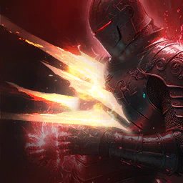
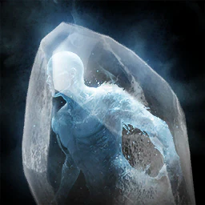
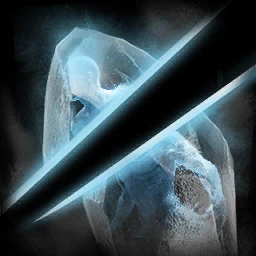
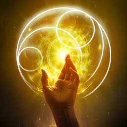
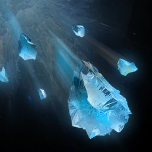
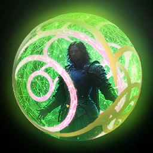
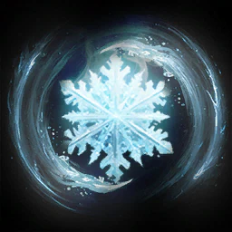

Sorcerer
Magiczne obrażenia z księgi. Niższe HP i obrona, w zamian kontrola tłumu. Broń: Spellbook. Rola: DPS magiczny.
Brak osobnego opracowania autora. Liczby i specjalizacje ze źródeł pod kartą; zalecany poziom tylko tam, gdzie źródło go podaje.
Skille aktywne
Firestorm
w rotacji
114 Fire obrażeń jeden cel. Mobile. 5 stagger.
PvE (aion2.gg): +20% Skill Speed, potem −2 s CD Hellfire za kulę ognia (12). Od 16 +15% obrażeń za kulę (do +75%) zastępuje Skill Speed. Przy ciasnej manie lepszy pierwszy wybór to −50% MP.
Specjalizacje
- poziom 8-50% MP cost
- poziom 8+20% Skill Speed
- poziom 8-60% Incoming Heal na 5 s przy trafieniu
- poziom 12-2 s Hellfire cooldown na fireball
- poziom 16+15% obrażeń na fireball, do +75%
karta skilla na aion2.gg · Aion 2 Companion (aion2.grimvane.app), wartości Global przy podanym poziomie skilla.
Ice Chain
w rotacji
Second atak podstawowy: 79 Water obrażeń do 4 wrogów i Slow (-40% Move Speed) na 5 s. otwiera łańcuch Cold Wave (86, 120 MP). Mobile. 2 stagger.
PvE (aion2.gg): +20% Skill Speed, potem −1 s CD Winter's Shackles za trafienie (12).
Specjalizacje
- poziom 8-20% MP cost
- poziom 8+20% Skill Speed
- poziom 8Do +12% obrażeń gdy trafi mniej celów
- poziom 12-1 s Winter's Shackles cooldown przy trafieniu
- poziom 16Cold Wave has 5% szansy na Frost na 2 s
karta skilla na aion2.gg · Aion 2 Companion (aion2.grimvane.app), wartości Global przy podanym poziomie skilla.
Flame Arrow
w rotacji
Atak podstawowy: 62 Fire obrażeń jeden cel. otwiera łańcuch Burst (66, przywraca 100 MP) i Pyroclasm (73, przywraca 120 MP). Mobile.
PvE (aion2.gg): +50% Multi-Hit, potem +5% Fire Damage Boost na 10 s po Pyroclasm (12). Od 16 reset CD Blaze po Pyroclasm zastępuje Multi-Hit do poziomu 20.
Specjalizacje
- poziom 8+20% MP przywrócone
- poziom 8Pochłania 1% HP
- poziom 8+50% Multi-Hit przy trafieniu
- poziom 12+5% Fire Damage Boost na 10 s gdy Pyroclasm fires
- poziom 16Pyroclasm resets Blaze
karta skilla na aion2.gg · Aion 2 Companion (aion2.grimvane.app), wartości Global przy podanym poziomie skilla.
Bittercold Wind
w rotacji
Summons wind na 2 s that zadaje 238 Water obrażeń do 4 wrogów, z 60% szansy na Root na 3 s (100% na NPCs). 10 stagger.
PvE (aion2.gg): +1 s wiatru, potem ignoruje Block i Evasion jako krytyk (12), potem użycie w ruchu.
Specjalizacje
- poziom 8+1 s summon
- poziom 8Becomes mobile
- poziom 8Przyciąga
- poziom 12Ignoruje Block i Evasion, lands as Critical Hit
- poziom 16-1 s Frost cooldown przy trafieniu
karta skilla na aion2.gg · Aion 2 Companion (aion2.grimvane.app), wartości Global przy podanym poziomie skilla.

Blaze
w rotacji
198 Fire obrażeń cel z Fire Mark tylko. Mobile. 7 stagger.
PvE (aion2.gg): +50% MP, potem Multi-Hit (12). Od 16 −3 s CD Wish of Concentration zastępuje opcję MP do poziomu 20.
Specjalizacje
- poziom 8Pochłania 3% HP
- poziom 8+50% MP przywrócone
- poziom 8Delayed obrażeń po 3 s
- poziom 12Multi-Hit przy trafieniu
- poziom 16-3 s Wish of Concentration cooldown przy trafieniu
karta skilla na aion2.gg · Aion 2 Companion (aion2.grimvane.app), wartości Global przy podanym poziomie skilla.
Flame Scattershot
1
120 Fire obrażeń staggered cel tylko.
aion2.gg: zostaw na randze 1. Trafia tylko cel ze Stagger i nic nie kosztuje.
Specjalizacje
- poziom 8Pochłania 5% HP
- poziom 8Przywraca 120 MP
- poziom 8Becomes mobile
- poziom 12Multi-Hit przy trafieniu
- poziom 16-1 s do każdy cooldown przy trafieniu
karta skilla na aion2.gg · Aion 2 Companion (aion2.grimvane.app), wartości Global przy podanym poziomie skilla.

Frost
paczki
178 Water obrażeń do 4 wrogów, z 50% szansy na Frost cel na 3 s (100% na NPCs). Mobile. 10 stagger.
PvE (aion2.gg): resetuje CD Frost Burst, gdy Frost się przyjmie. Bossowie zrzucają Frost.
Specjalizacje
- poziom 8Przywraca 200 MP
- poziom 8−5 s CD
- poziom 8Resets Frost Burst gdy Frost lands
- poziom 12+25% Frost chance na players
- poziom 16+1 s Frost
karta skilla na aion2.gg · Aion 2 Companion (aion2.grimvane.app), wartości Global przy podanym poziomie skilla.
Winter's Shackles
w rotacji
275 Water obrażeń do 4 wrogów i Slow na 3 s.
PvE (aion2.gg): +20% PvE Damage Boost na 5 s przy trafieniu; potem w ruchu (drugi slot na 12) i −15 s CD (16).
Specjalizacje
- poziom 8Becomes mobile
- poziom 830% Frost na 3 s
- poziom 8+20% PvE i +10% PvP Damage Boost na 5 s
- poziom 12Dodaje Winter's Illusion
- poziom 16−15 s CD
karta skilla na aion2.gg · Aion 2 Companion (aion2.grimvane.app), wartości Global przy podanym poziomie skilla.

Frost Burst
paczki
395 Water obrażeń do 4 wrogów wokół frozen cel. przeciw Incapacitated Immunity it has 7% szansy na trigger. 7 stagger.
PvE (aion2.gg): pochłania 7% HP, potem ignoruje Block i Evasion jako krytyk (12). Na bossie Frost prawie nie siada, więc skill odpala się tylko w 7%.
Specjalizacje
- poziom 8Pochłania 7% HP
- poziom 8Becomes mobile
- poziom 875% Knock Back 2 m
- poziom 12Ignoruje Block i Evasion, lands as Critical Hit
- poziom 1650% szansy na reset jego cooldown
karta skilla na aion2.gg · Aion 2 Companion (aion2.grimvane.app), wartości Global przy podanym poziomie skilla.
Wish of Concentration
w rotacji
+10% Attack i +100 Accuracy na 10 s (20 s przy skill poziom 20). Mobile, brak cel.
PvE (aion2.gg): +10% Attack, potem +10% Combat Speed (12), potem −10 s do wszystkich CD (16).
Specjalizacje
- poziom 8-10% MP cost
- poziom 8+10% więcej Attack
- poziom 8+500 Max MP
- poziom 12+10% Combat Speed
- poziom 16-10 s do każdy cooldown
karta skilla na aion2.gg · Aion 2 Companion (aion2.grimvane.app), wartości Global przy podanym poziomie skilla.
Hellfire
w rotacji
Charge skill, 3 levels: 1 137 do 3 412 Fire obrażeń do 4 wrogów. 20 do 35 stagger.
PvE (aion2.gg): +30% Skill Speed, potem ignoruje Block i Evasion jako Multi-Hit (12). Od 16 −15 s CD zajmuje drugi slot, aż poziom 20 otworzy trzeci.
Specjalizacje
- poziom 8+30% Skill Speed
- poziom 8Fire obrażeń over time na 10 s
- poziom 8Becomes mobile
- poziom 12Ignoruje Block i Evasion, lands as Multi-Hit
- poziom 16−15 s CD
karta skilla na aion2.gg · Aion 2 Companion (aion2.grimvane.app), wartości Global przy podanym poziomie skilla.

Defiance
brak danych
Usuwa Stun, Knockdown, Airborne, Grab, Frost i Fear i daje Tenacity (status immunity) na 5 s. redukcja CD nie działa.
PvE (aion2.gg), specjalizacja: przywraca 20% HP przy użyciu. Docelowej rangi poradnik nie podaje.
Specjalizacje
- poziom 8Dodaje Curse: Old Tree
- poziom 8Przywraca 1 000 Stamina
- poziom 8Przywraca 20% HP
- poziom 12+2 s Tenacity
- poziom 16+50% PvE i +25% PvP Damage Tolerance w trakcie Tenacity
karta skilla na aion2.gg · Aion 2 Companion (aion2.grimvane.app), wartości Global przy podanym poziomie skilla.
Pasywki
Fire Mark
brak danych
Any Fire hit marks cel na 5 s. marked cel has 20% szansy na take 32 dodatkowe obrażenia od Fire hit (wewnętrzny CD 1 s).
Poziom 1: 369 dodatkowe obrażenia
Pasywka nie ma specjalizacji.
karta skilla na aion2.gg · Aion 2 Companion (aion2.grimvane.app), wartości Global przy podanym poziomie skilla.
Robe of Earth
brak danych
+7% Max MP, +5 Natural MP Regen, +105 Critical Hit podczas MP is 50% albo więcej
Poziom 1: +25% Max MP, +50 regen, +150 Critical Hit
Pasywka nie ma specjalizacji.
karta skilla na aion2.gg · Aion 2 Companion (aion2.grimvane.app), wartości Global przy podanym poziomie skilla.
Cold Snap
brak danych
50% szansy na 43 dodatkowe obrażenia na hitting slowed cel (wewnętrzny CD 1 s)
Poziom 1: 213 dodatkowe obrażenia
Pasywka nie ma specjalizacji.
karta skilla na aion2.gg · Aion 2 Companion (aion2.grimvane.app), wartości Global przy podanym poziomie skilla.
Robe of Flame
brak danych
+100 Accuracy, +1% PvE i +0,5% PvP Damage Boost, +0,2% Double Chance
Poziom 1: +10% PvE, +5% PvP Damage Boost, +2% Double Chance (Accuracy stays 100)
Pasywka nie ma specjalizacji.
karta skilla na aion2.gg · Aion 2 Companion (aion2.grimvane.app), wartości Global przy podanym poziomie skilla.
Absorb Essence
brak danych
+10,7% Ailment-type i Mental-type Chance; przywraca 25 MP przy trafieniu atakiem (wewnętrzny CD 1 s)
Poziom 1: +17%; 70 MP
Pasywka nie ma specjalizacji.
karta skilla na aion2.gg · Aion 2 Companion (aion2.grimvane.app), wartości Global przy podanym poziomie skilla.

Grace of Resistance
brak danych
+11,2% Mental-type i Impact-type Resist
Poziom 1: +22%
Pasywka nie ma specjalizacji.
karta skilla na aion2.gg · Aion 2 Companion (aion2.grimvane.app), wartości Global przy podanym poziomie skilla.
Robe of Cold
brak danych
+1% Defense, +55 Critical Hit Resist; slows attacker o 25% na 2 s (CD 10 s)
Poziom 1: +10% Defense, +100, 40% na 4 s
Pasywka nie ma specjalizacji.
karta skilla na aion2.gg · Aion 2 Companion (aion2.grimvane.app), wartości Global przy podanym poziomie skilla.
Grace of Enhancement
brak danych
+20% PvE i +10% PvP Damage Boost podczas MP is 25% albo więcej; 50% szansy na 106 obrażeń przy trafieniu atakiem (wewnętrzny CD 1 s)
Poziom 1: Boost unchanged; 216 obrażeń
Pasywka nie ma specjalizacji.
karta skilla na aion2.gg · Aion 2 Companion (aion2.grimvane.app), wartości Global przy podanym poziomie skilla.

Revitalization Contract
brak danych
+17% Status Effect Resist, +10% więcej na 5 s gdy hit podczas stunned, knocked down, airborne, frozen albo feared (10 stacki); przywraca 35% Max HP przy 10% HP albo less (CD 60 s)
Poziom 1: +35%; 44% Max HP
Pasywka nie ma specjalizacji.
karta skilla na aion2.gg · Aion 2 Companion (aion2.grimvane.app), wartości Global przy podanym poziomie skilla.
Vitality Evaporation
brak danych
261 obrażeń przy trafieniu podczas cel's HP is above 70% (wewnętrzny CD 1 s)
Poziom 1: 492 obrażeń above 61%
Pasywka nie ma specjalizacji.
karta skilla na aion2.gg · Aion 2 Companion (aion2.grimvane.app), wartości Global przy podanym poziomie skilla.
Stygmy

Glacial Smite
brak danych
1 477 Water obrażeń do 4 wrogów. 20 stagger.
Perki stygmy
- poziom 5Do +20% obrażeń z więcej celów
- poziom 10−30 s CD
- poziom 1550% Frost na 3 s
- poziom 20Ignoruje Block i Evasion, lands as Multi-Hit
karta skilla na aion2.gg · Aion 2 Companion (aion2.grimvane.app), wartości Global przy podanym poziomie skilla.
Soul Freeze
brak danych
1 037 Water obrażeń z 75% szansy na Seal na 5 s (100% na NPCs). 20 stagger.
Perki stygmy
- poziom 550% Root na 5 s
- poziom 10-1 000 Stamina
- poziom 15+2 s Seal
- poziom 20+25% Seal chance
karta skilla na aion2.gg · Aion 2 Companion (aion2.grimvane.app), wartości Global przy podanym poziomie skilla.
Curse: Tree
brak danych
Polymorphs cel w tree na 10 s i cuts jego Fire Tolerance o 20%; ciebie move back; attacking tree przebija it. 20 stagger.
Perki stygmy
- poziom 5Więcej trafia do break it
- poziom 10-200 Block i Evasion na 10 s po
- poziom 15-20% Impact-type Resist na 10 s po
- poziom 20Debuff applies even jeśli broken
karta skilla na aion2.gg · Aion 2 Companion (aion2.grimvane.app), wartości Global przy podanym poziomie skilla.

Steel Barrier
brak danych
Tarcza worth 16% of Max HP na 60 s (35% przy 20), +10% PvE i +5% PvP Damage Tolerance podczas it holds, 300 Stamina gdy it ends. Mobile.
Perki stygmy
- poziom 5+10% Move Speed
- poziom 10HP regen przy intervals
- poziom 15+10% PvE i +5% PvP Tolerance
- poziom 20−15 s CD
karta skilla na aion2.gg · Aion 2 Companion (aion2.grimvane.app), wartości Global przy podanym poziomie skilla.

Cold Storm
brak danych
945 obrażeń Water i Slow, do 4 wrogów w 5 m. Burza na 7 s nakłada Frostbite: 472 obrażeń Water co 1 s przez 10 s.
Perki stygmy
- poziom 5Enhanced Frostbite
- poziom 1030% Root na 2 s
- poziom 15+3 s storm
- poziom 20+10 s Frostbite
karta skilla na aion2.gg · Aion 2 Companion (aion2.grimvane.app), wartości Global przy podanym poziomie skilla.
Arctic Armor
brak danych
+20% PvE i +10% PvP Damage Tolerance na 10 s (20 s przy 20); attackers w 7 m have 5% szansy na be frozen na 3 s; Magic Displacement podczas MP is 50% albo więcej
Perki stygmy
- poziom 5+20% Impact-type Resist
- poziom 10X1,5 pochłania Essence
- poziom 15X1,5 Robe of Cold
- poziom 20+20% PvE i +10% PvP Tolerance
karta skilla na aion2.gg · Aion 2 Companion (aion2.grimvane.app), wartości Global przy podanym poziomie skilla.
Lumiel's Space
brak danych
998 obrażeń do 4 wrogów z 75% szansy na Airborne na 3 s (100% na NPCs)
Perki stygmy
- poziom 5Do +20% obrażeń z więcej celów
- poziom 10Dodaje Depths
- poziom 15+1 s Depths Knockdown
- poziom 20−30 s CD
karta skilla na aion2.gg · Aion 2 Companion (aion2.grimvane.app), wartości Global przy podanym poziomie skilla.
Delayed Explosion
brak danych
1 116 Fire obrażeń po 4 s; cel takes 15% więcej obrażeń od ciebie w trakcie delay. Mobile.
Perki stygmy
- poziom 5Przywraca 200 MP
- poziom 10−10 s CD
- poziom 15Becomes AoE skill
- poziom 20+10% więcej obrażeń taken
karta skilla na aion2.gg · Aion 2 Companion (aion2.grimvane.app), wartości Global przy podanym poziomie skilla.
Divine Burst
brak danych
1 140 Fire obrażeń jeden cel. 50 stagger.
Perki stygmy
- poziom 5+20% Skill Speed
- poziom 10Pochłania 10% HP
- poziom 1575% Knock Back
- poziom 20Stun na 3 s po Knock Back
karta skilla na aion2.gg · Aion 2 Companion (aion2.grimvane.app), wartości Global przy podanym poziomie skilla.
Fire Wall
brak danych
Ściana 1 × 10 m na 3 s: 1 300 obrażeń Fire i Embers, do 4 wrogów, potem 650 obrażeń Fire co 1 s przez 10 s.
Perki stygmy
- poziom 5Enhanced Embers
- poziom 10+2 m width
- poziom 15+2 s wall
- poziom 20+10 s Embers
karta skilla na aion2.gg · Aion 2 Companion (aion2.grimvane.app), wartości Global przy podanym poziomie skilla.
Element Enhancement
brak danych
+20% Fire Attack i +20% Water Attack na 10 s (20 s przy 20). Mobile.
Perki stygmy
- poziom 5+200 Accuracy
- poziom 10X1,5 Robe of Flame effect
- poziom 15X1,5 Grace of Enhancement effect
- poziom 20+10% więcej Fire i Water Attack
karta skilla na aion2.gg · Aion 2 Companion (aion2.grimvane.app), wartości Global przy podanym poziomie skilla.
Hibernation
brak danych
Immunity do obrażeń i status effects na 5 s; usuwa Hibernation ends it early, przywraca 20% Max HP i moves ciebie back
Perki stygmy
- poziom 5+100% Incoming Heal
- poziom 105% Max HP co 1 s
- poziom 15+2 s
- poziom 20Triggers na Impact-type status
karta skilla na aion2.gg · Aion 2 Companion (aion2.grimvane.app), wartości Global przy podanym poziomie skilla.

Assault Bombardment
brak danych
886 obrażeń do 4 wrogów z 30% szansy na Frost na 3 s (100% na NPCs); do +20% Defense o cele hit
Perki stygmy
- poziom 5+20% Attack na 5 s przy trafieniu
- poziom 10500 MP obrażeń
- poziom 15+10 m range
- poziom 20+20% Frost chance
karta skilla na aion2.gg · Aion 2 Companion (aion2.grimvane.app), wartości Global przy podanym poziomie skilla.
Build PvE
Plan PvE z aion2.gg (klient EU/NA). Jednej docelowej rangi większości skilli ten poradnik nie podaje.
- Stygmy grupy: Element Enhancement, Fire Wall, Delayed Explosion i Cold Storm. Solo: Steel Barrier zamiast Cold Storm.
- Otwieranie bossa: łańcuch Flame Arrow, potem Wish of Concentration i Element Enhancement, potem Fire Wall i Bittercold Wind, Delayed Explosion, Winter's Shackles i Hellfire.
- Robe of Earth chce 50% MP pod Critical Hit, Grace of Enhancement chce 25% MP pod Damage Boost.
- Frost i Frost Burst są pod paczki. Boss zrzuca Frost, a Frost Burst odpala się wtedy tylko w 7%.
- Flame Scattershot zostaw na randze 1.
Źródła
- Aion 2 Companion — skille, pasywki, stygmy
- aion2.gg — lista skilli klasy
- aion2.gg — build PvE
- aion2data.com — dane klienta Global
Data tej strony: 11 listopada 2026. Edycja Global (Steam, EU). Nazwy skilli są po angielsku, tak jak w kliencie.